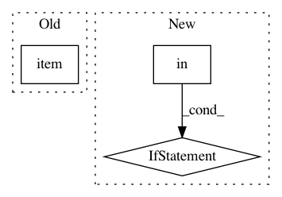

5ad1bd651f39457efcebe6be251204a4cc8f07e8,theanolm/network.py,Architecture,from_state,#Any#Any#,47
Before Change
classname._check_parameter_in_state("arch.skip_layer_size", state)
return classname(
state["arch.word_projection_dim"].item(),
state["arch.hidden_layer_type"].item(),
state["arch.hidden_layer_size"].item(),
state["arch.skip_layer_size"].item())
After Change
:param state: a dictionary of the architecture parameters
if not "arch.layers" in state:
raise IncompatibleStateError(
"Parameter "arch.layers" is missing from neural network state.")
// A workaround to be able to save arbitrary data in a .npz file.
dict_ndarray = state["arch.layers"][()]
layer_descriptions = dict_ndarray["data"]
return classname(layer_descriptions)
In pattern: SUPERPATTERN
Frequency: 3
Non-data size: 3
Instances
Project Name: senarvi/theanolm
Commit Name: 5ad1bd651f39457efcebe6be251204a4cc8f07e8
Time: 2015-11-28
Author: seppo.git@marjaniemi.com
File Name: theanolm/network.py
Class Name: Architecture
Method Name: from_state
Project Name: pytorch/pytorch
Commit Name: 0c60922fb0614132433779ad45ab8f30783db2ae
Time: 2021-02-03
Author: haichuan@fb.com
File Name: torch/quantization/_learnable_fake_quantize.py
Class Name: _LearnableFakeQuantize
Method Name: forward
Project Name: Microsoft/nni
Commit Name: 1cada380ff768d6e59aa4089734cbed74014b9bb
Time: 2019-11-17
Author: v-yugzh@microsoft.com
File Name: src/sdk/pynni/nni/nas/pytorch/enas/mutator.py
Class Name: EnasMutator
Method Name: on_calc_layer_choice_mask